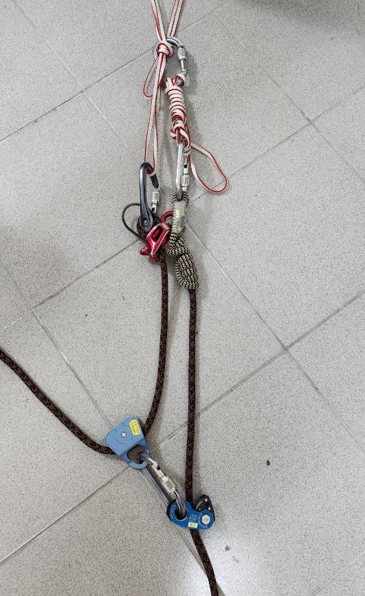
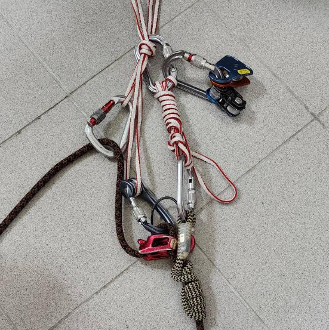
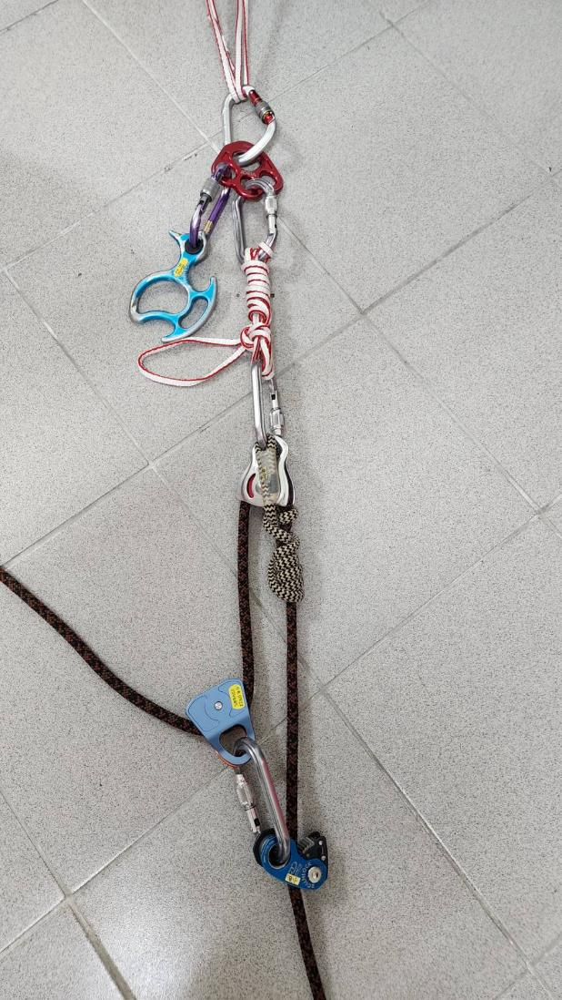
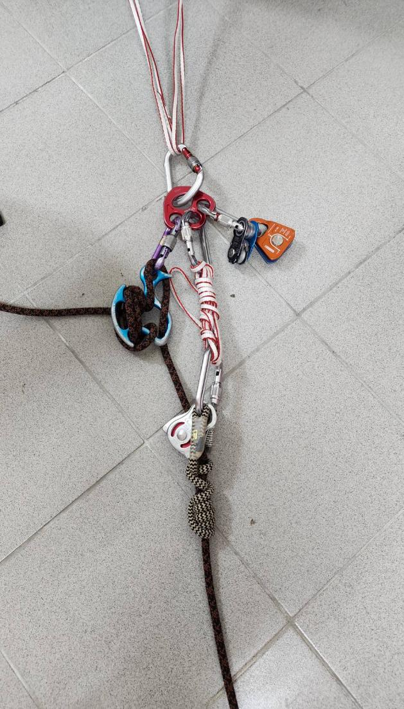
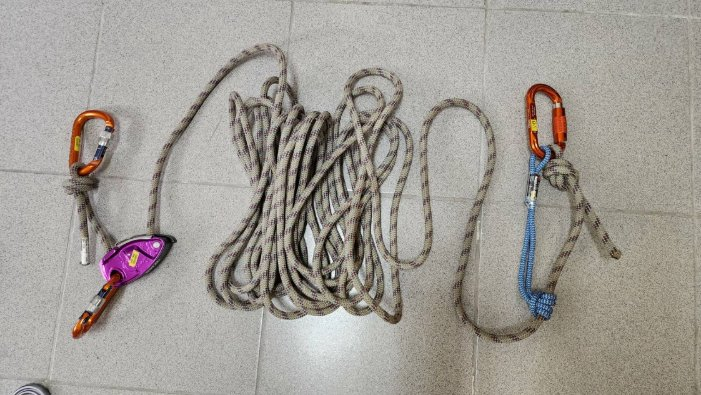
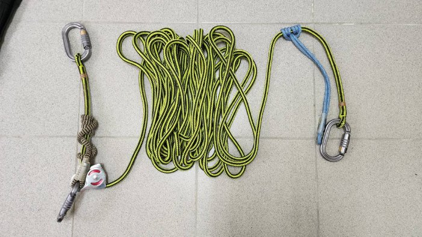
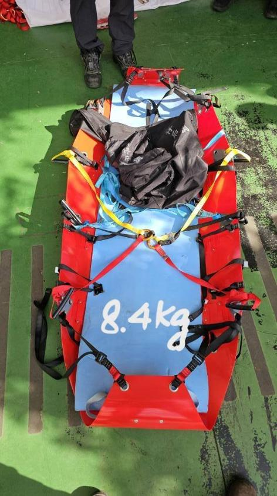
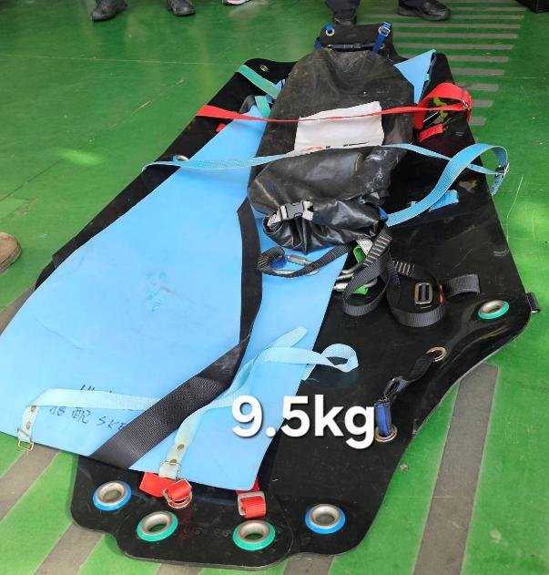
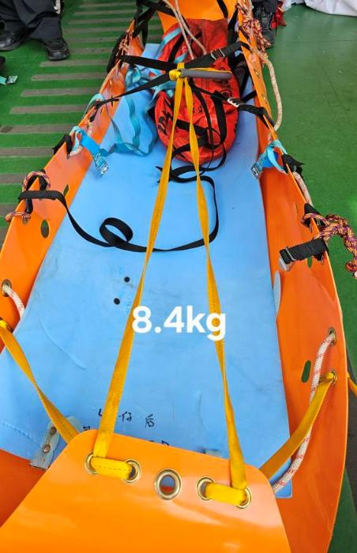

個人輕量化裝備 — 一套模組，個人裝備即是公裝
互動教學簡報 · 左側可隨時拉開匿名提問牆 🙋
可複選多種活動（再點一次取消）；找不到的用最後欄位自訂新增。結果即時更新。
同一套輕量化模組，依情境微調，全套（未計入公裝主繩）落在：
第 11 頁有完整互動明細，可依情境切換。
先猜一個公斤數，↓ 向下用文字雲寫下，再看實際的公裝重量。
含主繩 ×4、擔架、Lanyard／GRILLON 組與護繩 —— 第 12 頁有完整清單與功能。


由個人模組裝備即可組成的第一種拖拉系統。


第二種組裝方式，核心改用 OKA 下降器與分立盤。
| 品牌 / 名稱 | 數量 | 重量 |
|---|
拖拉系統的省力，來自滑輪組的機械利益。下方為講師自製的互動網頁，可直接操作。
來源：phu00572.github.io/Pulley-tension
| 分類 | 裝備 / 名稱 | 組重 | 功能 |
|---|





一套模組、個人裝備即是公裝 —— 讓每一克都用在對的地方。
還有問題嗎？點左側 🙋 提問牆，匿名發問。